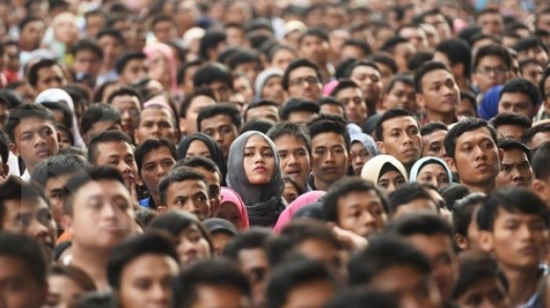
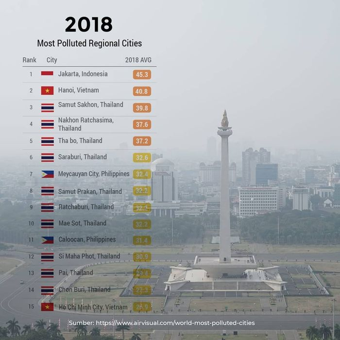

1.1 Latar Belakang

Jakarta, ibu kota dari Indonesia. Menjadi rumah bagi 10,56 juta jiwa di Indonesia. Tanpa disadari 10,56 juta jiwa ini menjadi kontributor pencemaran alam terutama pencemaraan udara. Jakarta pernah menduduki peringkat pertama, kota yang udaranya paling berpolusi, tepatnya pada tahun 2019 lalu.

Jakarta berhasil menduduki peringkat pertama kota yang paling berpolusi pasti ada kaitannya dengan perilaku manusia yang tidak baik. Perlakuan seperti penggunaan kendaraan bermotor yang berlebihan, pembakaran sampah serta pembakaran batubara untuk pembangkit listrik menjadi alasan utama mengapa lingkungan serta udara di Jakarta menjadi semakin buruk serta kotor dan tidak lagi sehat bagi paru-paru kita.
Pemanasan global merupakan perubahan iklim yang mengacu pada perubahan suhu dan pola cuaca dalam jangka panjang. Penyebab pemanasan global secara umum adalah meningkatnya produksi gas rumah kaca. Sekarang bumi kita sedang berjuang dengan pemanasan global yang diakibatkan oleh perlakuan kurang bertanggung jawab manusia seperti membakar hutan, menggunakan kendaraan bermotor secara berlebihan, dan masih banyak lagi.
Kita sebagai manusia yang juga merupakan masyarakat dunia telah diciptakan oleh Allah seturut dengan citra-Nya serta segambar dengan rupa Dia. Manusia dianugerahi dengan akal budi dan rasa tanggung jawab untuk menjaga bumi dan seluruh isinya. Seperti apa yang pernah dikatakan-Nya "Beranakcuculah dan bertambah banyak, penuhilah bumi dan taklukkanlah itu, berkuasalah atas ikan-ikan di laut dan burung-burung di udara dan atas segala binatang yang merayap di bumi” (Kejadian 1:28). Tuhan menghendaki umat-umat-Nya untuk menguasai dan memanfaatkan seluruh kekayaan alam yang telah diciptakan-Nya.
1.2 Rumusan Masalah
Berdasarkan uraian latar belakang di atas, maka rumusan masalahnya adalah berikut:
- Apa itu pemanasan global dan penyebabnya?
- Bagaimana cara kita mengurangi penyumbangan karbon dioksida yang menyebabkan pemanasan global?
- Apa itu energi alternatif dan apakah energi alternatif dapat digunakan untuk mengurangi pemanasan global?
- Bagaimana cara membuat pembangkit listrik tenaga angin atau bayu?
- Bagaimana pembangkit listrik tenaga angin atau bayu dapat mengurangi polusi udara?
1.3 Ruang Lingkup Masalah
Untuk menjawab persoalan yang ada pada rumusan masalah perlu pengkajian beberapa hal
- mengidentifikasi hakikat dan penyebab dari global warming
- mengidentifikasi dampak global warming dan cara mengurangi penyebab global warming
- mengidentifikasi hakikat ajaran Gereja mengenai merawat serta mencintai lingkungan
- mengidentifikasi pengertian energi alternatif
- mengidentifikasi cara kerja pembangkit listrik tenaga angin atau bayu
1.4 Tujuan Percobaan
Dalam melakukan praktikum teknologi ramah lingkungan, adapun beberapa tujuan yang dicapai:
- Mengetahui dan memahami apa itu pemanasan global dan penyebabnya
- Mengetahui dan memahami apa yang ada pada ajaran Gereja mengenai lingkungan, dan
bumi
- Mengetahui dan memahami cara mengurangi efek rumah kaca
- Mengetahui dan memahami apa itu energi alternatif dan manfaatnya dalam mengurangi
pemanasan global
- Mengetahui dan memahami cara pembuatan pembangakti listrik tenaga angin
- Mengetahui dan memahami apa itu pembangkit listrik tenaga angin dan manfaatnya dalam
mengurangi pemanasan global
- Memenuhi tugas praktikum integrated learning membuat teknologi ramah lingkungan
1.5 Postulat dan Hipotesis
1.5.1 Postulat
Pemanasan global merupakan perubahan iklim yang mengacu pada perubahan suhu dan pola cuaca dalam jangka panjang sehingga terjadinya peningkatan suhu pada atmosfer bumi. Kerusakan alam yang terjadi sekarang disebabkan kebanyakan karena polusi udara yang merupakan penurunan kualitas karena masuknya unsur berbahaya ke atmosfer. Efek dari rumah kaca menjadikan panas yang ada di bumi tidak dapat dipantulkan ke luar angkasa tapi terperangkap di atmosfer. Efek rumah kaca inilah yang menjadi penyebab utama global warming.
Kenaikan suhu yang terlalu drastis serta meningkatnya kadar CO₂ dapat menimbulkan beberapa masalah alam. Seperti misal kebakaran hutan, kenaikan suhu udara yang tinggi dapat memicu terjadinya kebakaran hutan. Hal ini akan membuat hutan menjadi gundul serta asap yang dihasilkan akan mencemari air, tanah, dan udara. Selain itu, asap yang dihasilkan juga dapat mengganggu kesehatan. Naiknya suhu di udara serta di dalam laut membuat es yang berada di kutub mencair. Gletser yang berbentuk bongkahan es ini akan jatuh dan mencair di dalam laut, fenomena ini kemudian dapat menimbulkan erosi serta gelombang badai pantai yang meningkat. Gelombang badai pantai yang meningkat serta meningkatnya volume air laut dapat mengakibat banjir dan bahkan dapat membuat pulau-pulau kecil tenggelam. Sistem imun makhluk hidup juga tentunya akan menurun karena kenaikan suhu yang secara drastis serta tiba-tiba. Penyakit ini kemudian dapat menjadi wabah yang dapat mengkhawatirkan dunia. Dampak selanjutnya yang dapat terjadi akibat global warming atau pemanasan global adalah krisis terhadap air bersih.
Selain itu pembuatan energi untuk kehidupan sehari-hari manusia juga menjadi faktor meningkatnya efek gas rumah kaca. Pada dasarnya, energi yang digunakan oleh manusia sebenarnya sudah disediakan dan sudah ada di alam, sehingga manusia itu sendiri bisa langsung mendapatkannya. Namun, beberapa energi dibutuhkan usaha lebih untuk mendapatkannya. Dimana, cara menghasilkan energi tersebut dapat mengakibatkan dampak-dampak buruk yang merusak bumi.
|
Energi alternatif sendiri menjadi salah satu upaya dari manusia untuk mengurangi pemanasan global. Energi alternatif adalah energi yang dapat diperbaharui. Manusia memiliki tujuan dan alasan tersendiri untuk mengetahui lebih dalam mengenai energi alternatif. Seperti misalnya tujuan serta fungsi utama dari dibuat energi alternatif adalah untuk mengganti energi yang berasal dari bahan bakar fosil melihat minimnya bahan bakar yang berasal dari fosil serta melihat dari proses penghasilan energi dari bahan bakar fosil serta alam seperti bahan tambang dapat merusak lingkungan.
Salah satu sumber dari energi alternatif adalah angin. Angin adalah suatu udara yang bergerak disebabkan karena adanya perbedaan tekanan pada permukaan bumi. Pergerakan angin biasanya terjadi dari wilayah yang tinggi ke wilayah yang rendah, sehingga dapat menyebabkan suhu udara pada suatu daerah menjadi berbeda. Angin sangat dibutuhkan dalam kehidupan manusia, hampir setiap hari manusia membutuhkan angin dalam kegiatannya. Indonesia sendiri memiliki potensi untuk pembangkit listrik tenaga bayu (PLTB) sebesar 60,6 GW namun saat ini masih sangat kecil potensi yang sudah dimanfaatkan oleh pemerintah.
Maka dari itu kelompok kami memutuskan untuk membuat maket perumahan ramah lingkungan. Melihat keadaan Indonesia yang sangat sesuai sebagai tempat pengembangan PLTB kami membuat maket perumahan dengan pembakit listrik tenaga bayu atau angin.
1.5.2 Hipotesis
Jakarta, ibu kota dari Indonesia. Diperkirakan sudah menjadi rumah bagi 10,56 juta jiwa di Indonesia. Tanpa disadari 10,56 juta jiwa ini menjadi kontributor pencemaran alam terutama pencemaraan udara. Jakarta pernah menduduki peringkat pertama, kota yang udaranya paling berpolusi, tepatnya pada tahun 2019 lalu.
Pemanasan global merupakan perubahan iklim yang mengacu pada perubahan suhu dan pola cuaca dalam jangka panjang. Penyebab pemanasan global yang secara umum diprediksi karena meningkatnya produksi gas rumah kaca. Meningkatnya produksi gas rumah kaca ini dapat disebabkan oleh pembakar hutan, penggunaan kendaraan bermotor secara berlebihan, pembakaran batubara dan masih banyak lagi. Maka dari itu manusia sedang mencari cara bagaimana agar pemanasan global tersebut tidak berlanjut atau setidaknya berkurang. Manusia sedang meneliti lebih lanjut mengenai energi alternatif. Energi alternatif ini diperkirakan akan dapat membantu manusia dalam kehidupan sehari-hari seperti misalnya pembangkit listrik. Energi alternatif ini secara terus menerus diteliti untuk menggantikan energi yang tidak dapat diperbaharui seperti bahan tambang antara lain minyak bumi, batubara, penghasil bahan bakar, dan sebagainya. Dilansir dari cnbc indonesia.com, menurut Menteri Energi dan Sumber Daya Mineral (ESDM), Arifin Tasrif cadangan minyak yang Indonesia miliki diperkirakan hanya akan mampu bertahan sekitar sembilan (9) sampai sepuluh (10) tahun saja.
Presiden kita sekarang, Joko Widodo juga sudah memulai pembangunan pembangkit listrik dengan energi alternatif yang dapat diperbaharukan. Dikarenakan Indonesia yang memiliki pantai sepanjang 80.791,42 km diduga menjadi wilayah yang memiliki potensial tinggi untuk pengembangan PLTB atau Pembangkit Listrik Tenaga Bayu atau Angin. Kecepatan angin di Indonesia secara umum diperkirakan antara 4 m/detik hingga 5 m/detik. Namun di daerah-daerah tertentu seperti di pantai kecepatan anginnya dapat mencapai 10 m/detik. Dengan kecepatan tersebut, pembangunan pembangkit listrik tenaga angin masih kurang ekonomis. Namun, apabila dibangun dengan ketinggian tertentu dan diameter baling-baling yang besar dapat dihasilkan energi listrik dengan potensi kapasitas 10 hingga 100 kW.
1.6 Sumber Data
Seperti yang sudah kita ketahui Jakarta berhasil menduduki peringkat pertama kota yang paling berpolusi pasti ada kaitannya dengan perilaku manusia yang tidak baik. Perlakuan seperti penggunaan kendaraan bermotor yang berlebihan, pembakaran sampah serta pembakaran batubara untuk pembangkit listrik menjadi alasan utama mengapa lingkungan serta udara di Jakarta menjadi semakin buruk serta kotor dan tidak lagi sehat bagi paru-paru kita.
Maka dari itu upaya kelompok kami dalam mengurangi pemanasan global adalah dengan mengganti pembangkit listrik tenaga batubara dengan menggunakan pembangkit listrik tenaga bayu atau angin. Dalam percobaan ini kami mengumpulkan data baik secara primer maupun secara sekunder.
Data secara primer kami dapatkan dengan membuat serta mengobservasi maket yang telah kami buat bersama-sama sebelumnya. Kami melakukan penelitian dengan mencoba menyalakan angin buatan yang kami dapatkan dari kipas angin. Sedangkan untuk pengumpulan data secara sekunder kami lakukan dengan melihat dan mengumpulkan jurnal penelitian, serta mencari dari sumber-sumber terpercaya di internet.
1.7 Metode Penelitian
Masalah yang kelompok kami teliti adalah mengenai pemanasan global yang diakibatkan oleh meningkatnya efek gas rumah kaca. Efek gas rumah kaca timbul diakibatkan naiknya konsentrasi karbon dioksida atau yang dikenal dengan CO₂ dan gas lainnya yang ada di atmosfer. Peningkatan karbon dioksida atau CO₂ ini dikarenakan oleh beberapa kegiatan manusia. Seperti misalnya kegiatan manusia yang dapat meningkatan kadar CO₂ adalah penggunaan kendaran bermotor yang berlebihan, pembakaran sampah, pembakaran hutan pembakaran batubara, serta masih banyak lagi.
Maka dari itu kelompok kami menggunakan metode penelitian historis. Dengan mengamati perilaku manusia beberapa tahun kebelakang ini membuat kami dapat mengetahui penyebab meningkatnya kadar CO₂. Sehingga sekarang kita dapat belajar dari perlakuan sebelumnya, dan melakukan beberapa hal yang dapat mencegah situasi menjadi lebih buruk. Selain metode penelitian historis, kelompok kami juga menggunakan metode penelitian deskriptif dengan menuliskan berbagai masalah lingkungan serta udara yang terjadi pada masa sekarang atau dengan kata lain yang sedang berlangsung saat ini yaitu pemanasan global. Metode penelitian terakhir yang kami gunakan adalah metode penelitian eksperimen. Metode penelitian eksperimen, dikarenakan kami secara langsung mengamati perubahan udara secara suhu yang terjadi di bumi terutama di Indonesia. Selain itu kami secara langsung membuat maket komplek ramah lingkungan sebagai bahan percobaan serta pengamatan pembangkit listrik tenaga bayu atau angin.
|